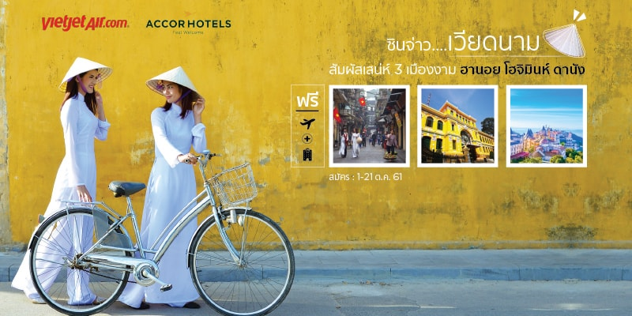

เคทีซีเฟ้นหาสมาชิกบัตรนักเดินทาง 3 ทีม ร่วมกิจกรรม KTC Real Team ครั้งที่
47: ซินจ่าวเวียดนาม สัมผัสเสน่ห์ 3 เมืองงาม

เมื่อเร็วๆ นี้ “เคทีซี” หรือ บริษัท
บัตรกรุงไทย จำกัด (มหาชน) ผู้ดำเนินชมรม “KTC PR
Press Club” จัดกิจกรรม “ย้อนกาลเก่า
เล่ารัตนโกสินทร์ ยินผ่านวรรณกรรม” ช่วงรัชกาลที่
4 โดยมีอาจารย์จุลภัสสร พนมวัน ณ อยุธยา
ผู้เชี่ยวชาญด้านศิลปะวัฒนธรรมร่วมเป็นวิทยากรให้ความรู้ย้อนอดีตรัตนโกสินทร์ในช่วงสมัยรัชกาลที่
4 โดยสะท้อนเรื่องราวผ่านแว่นวรรณกรรมที่มีสกุล “บุนนาค”
เป็นดั่งตัวละครสำคัญที่เติมเต็มยุคประวัติศาสตร์ช่วงนั้นให้สมบูรณ์
และยังบ่งบอกถึงการเปิดรับอารยธรรมตะวันตกเข้ามาเปลี่ยนแปลงประเทศไทยในหลายด้าน
ทั้งการศึกษา การทหาร การยกเลิกประเพณีและความเชื่อเก่าๆ
หันมายอมรับความคิดแบบใหม่
ทำให้ฐานะทางเศรษฐกิจของประเทศและประชาชนยกระดับสูงขึ้น ณ
วัดพิชยญาติการามวรวิหาร และวัดประยุรวงศาวาสวรวิหาร
รวมทั้งรับฟังเรื่องราวความเฟื่องฟูทางด้านการค้าและการขนส่งทางน้ำกับต่างประเทศทั้งซีกโลกตะวันออกและตะวันตกในช่วงรัชกาลที่
4 ณ ล้ง 1919
พร้อมชมอุทยานเฉลิมพระเกียรติสมเด็จพระศรีนครินทราบรมราชชนนีซึ่งตั้งอยู่ในละแวกใกล้กันก่อนกลับ